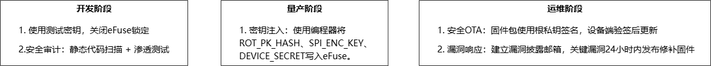
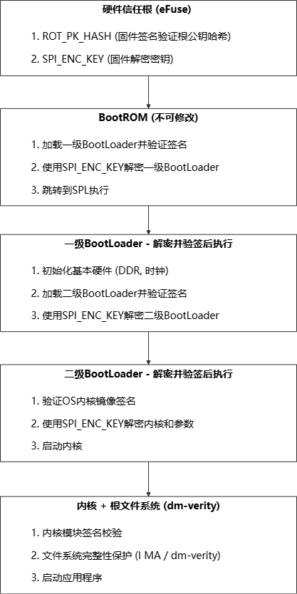

Security architecture
X1 security design starts with the hardware root of trust, covering boot verification, firmware and data protection, device identity, secure communication, and software material governance. The goals outlined in the manual are targeted at IEC 60730 functional safety and IEC 62443 network security requirements; whether a specific product meets certification still depends on hardware design, mass production process, key management, and complete implementation of application software.
Defense-in-Depth Path
eFuse 信任根 → BootROM → 一级/二级 BootLoader → 内核与根文件系统 → 应用
Each level only loads the next level of images verified by signatures; firmware keys and device secrets are stored in restricted hardware areas.
secure trust chain
eFuse plan includes the chip’s unique ID, root public key hash ROT_PK_HASH, firmware decryption key SPI_ENC_KEY, device secret DEVICE_SECRET, and lock bit. During mass production, data should be programmed and verified first, and finally read/write protection should be set; The locked bit is usually irreversible and must be verified through the sample flow to verify the programming script.

Secure Boot

: The key responsibilities of the BootROM
BootROM: uses root information in eFuse to verify and decrypt the first-level BootLoader.
Level 1 and Level 2 BootLoader verify system images step by step; if verification fails, no jump execution is allowed.
During the kernel phase, it continues to protect key modules and file system integrity before launching application services.
Important
The current manual clearly states Rollback protection is not supported at this time. The upgrade process does not prevent downgrades based on version numbers, so version policies, cloud authorization, and release approvals cannot replace chip-level rollback protection.
Data and Device Protection
Anti-Copy Board: Firmware is encrypted and stored in Flash, using each device’s secret derived identity and data key.
Read Protection: Lock the debugging entry point during mass production, and sensitive keys are only allowed for use by secure hardware.
Anti-tampering: Verification of key images and configurations during startup and runtime, with sensitive data written to encrypted partitions.
Privacy Protection: Uses derived device identification externally, clears user data partitions during factory reset.
Secure Transmission: The business link uses TLS/DTLS and device certificates for server-side or two-way authentication.
production checklist
establishes isolated root keys and signature permissions for development, trial production, and mass production.
back and verify the public key hash, device secret, and encryption key status before burning
LOCK_BITS.Exporting keys, tokens, and full device identities in logs, crash dumps, or test interfaces is prohibited.
Verification paths such as signature failure, power outage upgrades, partition damage, certificate expiration, and factory resets.
Generate CycloneDX SBOMs for firmware releases and continuously track third-party library licenses and known vulnerabilities.
syft dir:output/target -o cyclonedx-json > sbom_cyclonedx.json